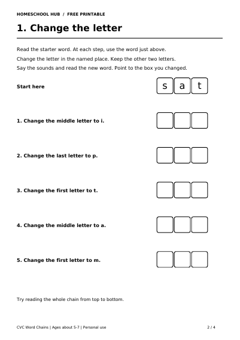

Free printable
Change One Letter: CVC Word Chains
Ages about 5–7
Change one letter in a three-letter word, then blend the sounds to read the new word. Point to the first, middle or last box that changed and keep the other two letters in place.
Four A4 pages include a parent guide with a worked example, a chain with letter instructions, a chain read aloud by an adult, and a script with answers.
Try a 5–10 minute session with a child who can already blend simple words such as cat and dog. Print pages 2–3 in black and white and keep the script on page 4 handy.
Read one instruction at a time. Your child can say the letters and point to the changed box while you write. Stop after a few changes and return to the chain later if needed.
For practice blending simple words, try CVC Words. For help hearing the first sound, try Beginning Sounds.
